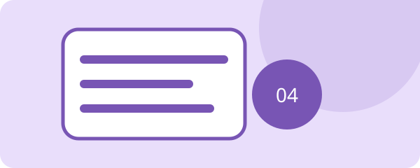

Önceki ders çalışması
Psikolog Randevu Planlayıcısı
Python ile randevu planlama ve çakışma kontrolü.
Teknolojiler: Python
Ne öğrendim / hedefim: Gerçek bir ihtiyacı kurallara ve kontrollere dönüştürmeyi öğrendim.
GitHub deposu →ÇALIŞMALARIM
İki önceki ders çalışmam ve bu portfolyo için geliştirdiğim üç yeni etkileşimli demo.
Önceki ders çalışması
Python ile randevu planlama ve çakışma kontrolü.
Teknolojiler: Python
Ne öğrendim / hedefim: Gerçek bir ihtiyacı kurallara ve kontrollere dönüştürmeyi öğrendim.
GitHub deposu →
Önceki ders çalışması · Algoritma tasarımı
Randevuya 24 saat veya daha az kaldığında hatırlatma üreten sistem için girdi–işlem–çıktı analizi, sözde kod ve akış şeması hazırladım. Bu çalışma çalışan bir web veya Python uygulaması değil, algoritma tasarımıdır.
Yöntem: Sözde kod, karar yapıları, akış şeması ve YZ karşılaştırması
Ne öğrendim: Eksik ve geçersiz girdileri ayırt etmeyi, zaman koşullarını algoritmaya dönüştürmeyi öğrendim.
Ödev belgesini aç →Bu portfolyo için geliştirilen çalışan demo
Beş duygu arasından seçim, geçici tarihli kayıt listesi ve silme işlevleri.
Teknolojiler: HTML, CSS, JavaScript
Ne öğrendim: Geçici bellekte kayıt tutmayı ve gizliliği önceleyen arayüz tasarlamayı öğrendim.
Duygu takip aracını aç →Bu portfolyo için geliştirilen demo
Stres, kaygı, duygu düzenleme, psikolojik dayanıklılık ve başa çıkma için çevrilebilir ve filtrelenebilir kartlar.
Teknolojiler: HTML, CSS, JavaScript
Ne öğrendim: İçeriği filtrelenebilir ve klavyeyle kullanılabilir öğrenme kartlarına dönüştürdüm.
Bilgi kartlarını aç →
Bu portfolyo için geliştirilen eğitim demosu
Kurgusal üniversite öğrencisinin akademik stresle başa çıkma seçeneklerini üç aşamada keşfeden etkileşimli senaryo.
Teknolojiler: HTML, CSS, JavaScript
Ne öğrendim: Dallanma mantığını ve farklı seçeneklerin eğitsel açıklamalarını tasarladım.
Karar ağacını aç →Not: İlk iki çalışma önceki ders ödevleridir. Üç demo yalnızca bu portfolyo için geliştirilmiştir; eski ders ödevleri değildir. Yönergede istenen dört önceki ders çalışması şartı henüz karşılanmamaktadır.